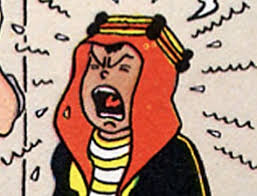

Abdallah est un personnage de fiction des Aventures de Tintin, créé par Hergé. Il apparaît pour la première fois en 1949 dans la deuxième version de Tintin au pays de l'or noir. Âgé de 6 ans lors de cette première apparition, il est le fils de Mohammed Ben Kalish Ezab, l'émir du Khemed, un État fictif de la péninsule arabique. Le personnage d'Abdallah est inspiré physiquement de Fayçal II, qui accède au trône d'Irak en 1939, à l'âge de 3 ans.
Adulé par son père, qui le couvre d'éloges et de cadeaux, Abdallah est un enfant-roi insupportable et capable des pires bêtises. Personnage capricieux, il multiplie les farces et attrapes au détriment des autres, en premier lieu du capitaine Haddock, prêt à courir les dangers pour fuir sa présence. Le comportement d'Abdallah révèle l'impuissance de son père, incapable d'asseoir son autorité sur son fils comme sur son royaume.
Les nombreuses facéties d'Abdallah constituent l'un des principaux ressorts du comique hergéen dans les derniers albums de la série. Comme d'autres personnages secondaires, à l'image des Dupondt ou de Séraphin Lampion, il rend immédiatement divertissantes les scènes auxquelles il participe, notamment à travers le couple comique qu'il forme avec le capitaine, tour à tour attendri ou excédé par le comportement du jeune garçon, puis avec Nestor.
Abdallah se place enfin dans la longue tradition de personnages d'enfants qui peuplent la série, le sauvetage d'un enfant brusquement séparé de ses parents étant l'un des motifs narratifs les plus fréquemment utilisés par Hergé.
